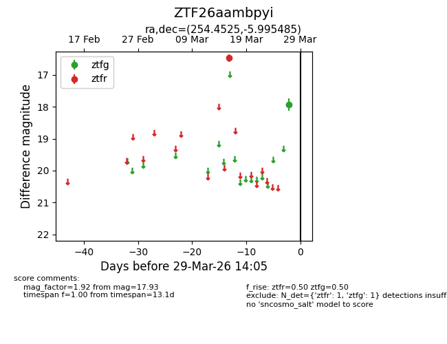
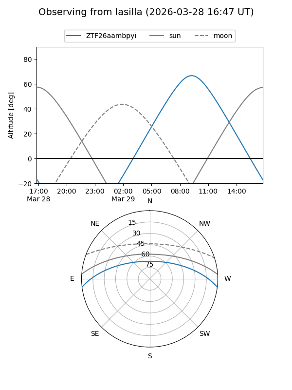
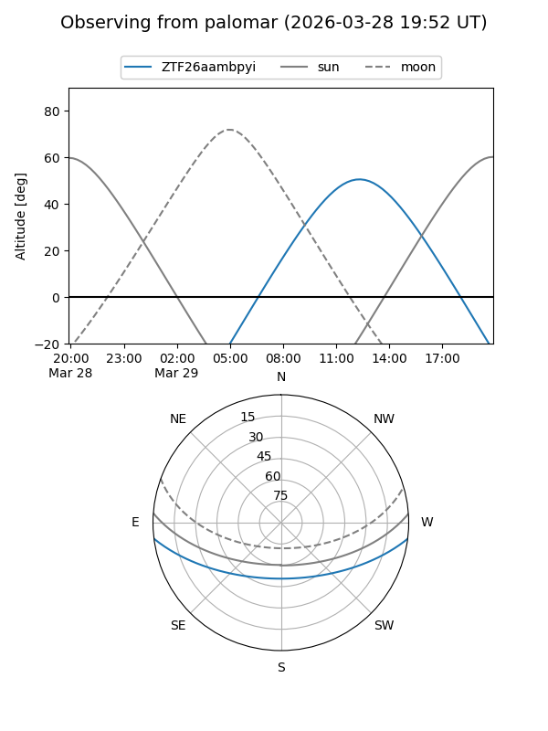

ZTF26aambpyi
Target ZTF26aambpyi at 2026-03-29 14:08
Aliases and brokers:
FINK: link
Lasair: link
ALeRCE: link
alt names
ZTF26aambpyi (ztf,fink_ztf)
Coordinates:
equatorial (ra, dec) = 254.4525,-5.99548
equatorial (HMS+DMS) = 16:57:48.60,-05:59:43.75
galactic (l, b) = (13.4946,+21.92865)
Flags:
Photometry:
last ztfg=17.93, ztfr=16.47
1 ztfg, 1 ztfr detections
Lightcurve

Visibility


Additional plots